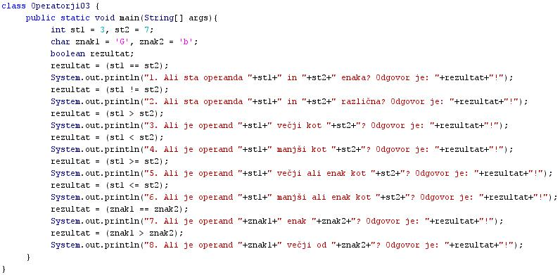
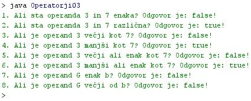

PRIMERJALNI ALI RELACIJSKI OPERATORJI
- Operatorji so simboli, ki predstavljajo operacije, ki jih izvajamo nad operandi.
- Primerjalni operatorji predstavljajo operacije primerjanja dveh operandov.
- S primerjalnimi operatorji ugotavljamo odnose ali razmerja med operandi.
- Odnose ali razmerja imenujemo s tujko relacije.
- Primerjalne operatorje zato imenujemo tudi relacijski operatorji.
- S primerjalnimi operatorji ugotovimo, ali je en operand veèji od drugega, manjši od drugega, razlièen od drugega ali pa enak drugemu operandu.
- Primerjalni operandi so lahko tudi sestavljeni oziroma kombinirani.
- S sestavljenimi primerjalnimi operatorji ugotovimo, ali je en operand veèji ali enak drugemu, oziroma manjši ali enak drugemu operandu.
- Poznamo šest vrst primerjalnih ali relacijskih operatorjev:
- Enak - "= =".
- Razlièen - "!=".
- Veèji kot - ">".
- Manjši kot - "<".
- Veèji ali enak - ">=".
- Manjši ali enak - "<=".
- Primerjalni operator enakosti (= =) ni isto kot prireditveni operator (=).
- Rezultat primerjave enoakosti dveh števil je samo ugotovitev, da sta spremenljivki enaki ali pa nista enaki.
- Dobimo lahko torej dva razlièna izida preverjanja enakosti dveh števil: true (števili sta enaki) in false (števili nista enaki, torej sta razlièni.
- Rezultat ugotavljanja enakosti dveh števil (= =) je torej logièna spremenljivka tipa boolean.
- Èe pa uporabimo prireditveni stavek int stranica = 3, pa nismo primerjali imena spremenljivke "stranica" s številom tri, paè pa smo število tri priredili imenu "stranica". Na lokaciji v pomnilniku pod imenom stranica smo torej shranili vrednost "3".
- Rezultat prirejanja vrednosti neki spremenljivki (=) je torej neka shranjena vrednost na neki lokaciji v pomilniku, tip te spremenljivke pa je doloèen v napovedi ali deklaraciji te spremenljivke. Tip spremenljivke torej ni le boolean, kot pri primerjanju dveh števil.
- Med seboj lahko primerjamo števila, znake in nize.
- Znake lahko primerjamo med seboj zato, ker so v raèunalniku zastopani kot števila. Ta števila so kode posameznih znakov. Poglej si uèno enoto številka 11 o znakih.
- Ko program primerja posamezne znake med seboj, primerja pravzaprav njihove kode.
- Primerjanje znakov se torej v raèunalniku spremeni v primerjanje števil.
- Primerjalne operatorje uporabljamo za preverjanje izpolnjevnja postavljenih pogojev v pogojnih stavkih in v zankah.
- Pogojne stavke in zanke si bomo podrobneje ogledali èez nekaj uènih enot.
VAJA 14:
- V okolju za pisanje izvorne kode v jeziku Java, za prevajanje in za interaktivno delo zapiši program "Operatorji03". Pomagaj si s sliko.
- Kodo lahko tudi kopiraš iz te datoteke in jo prilepiš v okolje, v katerem pišeš programèke. Pozor: koda, ki jo boš kopiral/a, vsebuje eno, dve, tri ali štiri napake. Èe želiš, da bo program deloval, moraš napake odkriti in jih odpraviti.
- Izvorno kodo shrani pod imenom "ImePriimek14.java". ImePriimek je seveda tvoje lastno ime in priimek.
- Datoteko "ImePriimek14.java" prevedi.
- Prevedeno datoteko zaženi, preveri rezultat v interaktivnem oknu in poklièi profesorja, da vidi rezultat.
1. Vprašanja:
1. Kaj so operatorji?
2. Kaj so primerjalni operatorji?
3. Zapiši primerjalne operatorje in jim pripiši njihove simbole!
4. Kako imenujemo s tujko primerjalne operatorje?
5. Kakšna je razlika med videzom primerjalnega operatorja enakosti in videzom prireditvenega operatorja?
6. Kakšna je razlika v nalogi oziroma operaciji, ki jo predstavlja prireditveni operator in operator enakosti?
7. Zakaj lahko med seboj primerjamo tudi znake?
8. Kakšnega tipa je spremenljivka, ki je rezultat primerjave vrednosti dveh spremenljivk?
9. Zapiši imena vseh spremenljivk, ki smo jih deklarirali v tej uèni enoti, pripiši jim tip podatka, ki smo ga v napovedi spremenljivke opredelili, na koncu pa jim pripiši še zaèetno vrednost.
10. Zapiši ime tiste spremenljivke , ki je v primeru te uène enote ob njenem deklariranju nismo inicializirali.
2. Zapiši od ene do pet kljuènih besed, ki povzemajo vsebino te uène enote.
3. Povezave do dodatnih informacij.
Spletni priroènik proizvajalca programskega okolja Java. To je podjetje Sun.
|